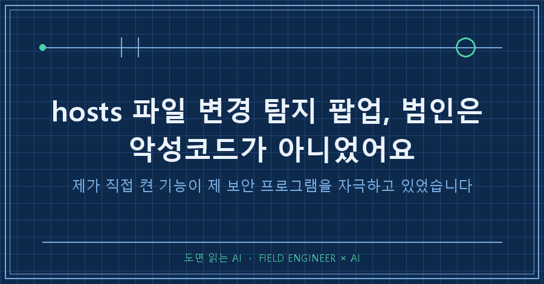
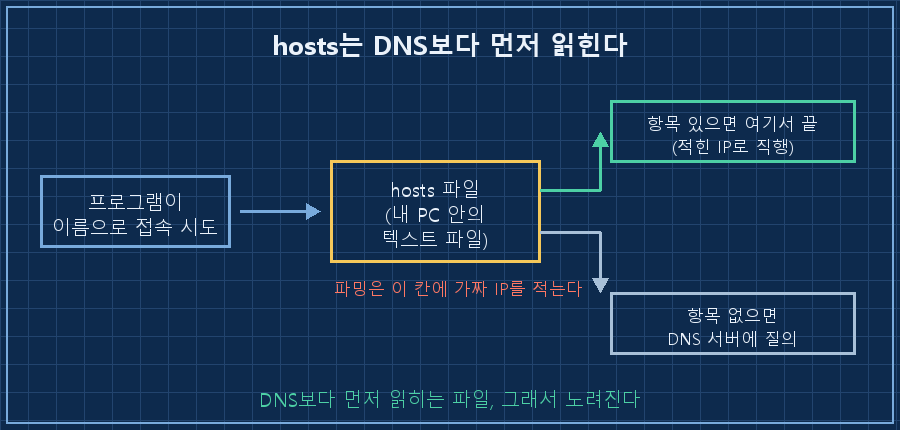
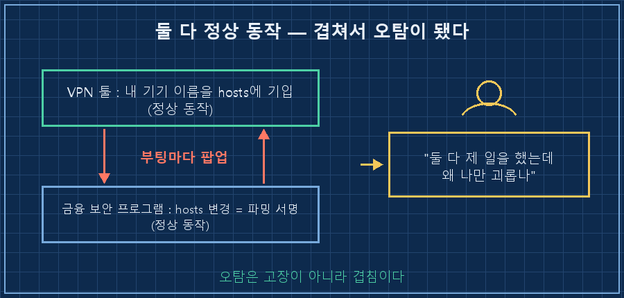
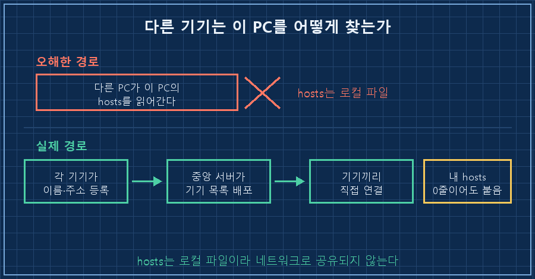

재부팅만 하면 보안 프로그램이 저한테 물었어요. hosts 파일이 바뀌었는데 원래대로 되돌릴까요?
hosts 파일 변경 탐지라는 문구를 보고 저는 당연히 악성코드부터 떠올렸습니다. 근데 범인은 바깥에서 들어온 놈이 아니었어요. 며칠 전 제가 직접 깔고 직접 켠 기능이었습니다.
2026년 9월 기준 윈도우 10 노트북이고, 밖에서 집 PC에 붙으려고 원격접속용 개인 VPN 툴을 새로 깐 직후였습니다.
저는 제조 현장에서 설비 자동화를 15년쯤 했어요. 기계가 멈추면 원인을 순서대로 짚는 게 직업입니다. 이번에도 순서대로 짚었는데, 하필 제일 비싼 용의자를 붙잡고 있었네요..
1. 팝업이 말한 그 파일이 뭐 하는 파일인가
hosts는 윈도우에 들어 있는 이름표 파일이에요. 어떤 주소로 접속할 때 시스템이 DNS 서버에 물어보기 전에 이 파일을 먼저 들여다봅니다. 여기에 "이 이름은 이 IP"라고 적혀 있으면 DNS까지 가지도 않고 그대로 믿어요.

그래서 파밍 공격의 고전 수법이 바로 이 파일 고치기예요. 은행 주소 옆에 가짜 IP를 적어두면, 사용자는 정상 주소를 치고 들어가는데 도착지는 가짜가 됩니다.
금융 보안 프로그램이 이 파일을 부팅마다 감시하는 이유가 그겁니다. 변경 자체를 파밍 공격의 서명으로 취급해요. 그러니까 그 팝업은 "공격을 잡았다"가 아니라 "공격에 쓰이는 자리가 건드려졌다"는 신호였던 거죠. 처음엔 이 차이를 못 읽었습니다.
2. 보안 프로그램 로그를 뒤졌는데, 읽을 수가 없었어요
AI한테 "팝업이 언제 몇 번 떴는지 이력을 뽑아달라"고 시켰어요. 저는 당연히 로그가 있을 줄 알았거든요.
> 보안 프로그램 설치 폴더\Log\(감시 로그).log
CP949로 디코딩 → 바이너리. 판독 불가암호화 저장이었습니다. 팝업이 떴는지 안 떴는지는 기계가 남긴 기록에서 확인할 방법이 없었어요. 남은 데이터원은 하나뿐이었죠. 그 화면을 본 사람, 즉 저요..
이게 이번 건에서 제일 오래 기억에 남을 대목입니다. 자동화든 AI든 "로그 보면 되지"로 시작하는데, GUI 알림은 로그에 안 남는 경우가 있어요. 그래서 그 뒤로는 검증 항목마다 "이건 누가 확인할 수 있는가"를 적어둡니다. 안 적어두면 다음 세션에서 또 로그를 뒤지느라 시간을 태우거든요. 여러분도 "로그에 없으니 확인 불가"로 흘려버린 증상, 하나쯤 있지 않으세요?
3. hosts를 열어보니 제 기기 이름이 적혀 있었습니다
정작 답은 팝업이 가리킨 파일 안에 있었어요. 열어보니 제가 깐 VPN 툴이 자기 구역을 만들어 놓고, 제 기기 네 대를 적어두고 있었습니다.
# (VPN 툴) Hosts Section Start
100.x.x.x 내-노트북
100.x.x.x 내-맥북
100.x.x.x 내-폰
100.x.x.x 내-보조노트북
# (VPN 툴) Hosts Section End이 툴에는 기기를 IP 대신 이름으로 부를 수 있게 해주는 기능이 있어요. 그 기능이 이름과 IP를 어디에 적어두느냐 하면, 바로 hosts입니다. 악성코드가 쓰는 것과 똑같은 방법으로, 똑같은 파일에 쓴 거죠.

여기서 고칠 수 있는 지점이 세 곳이었고, 저는 세 번째를 골랐습니다.
| 고칠 지점 | 팝업 | 잃는 것 |
|---|---|---|
| 보안 프로그램 삭제 | 사라짐 | 은행 접속 보안 통째로 |
| 감시 예외 등록 | 사라짐 | 진짜 파밍도 통과 (구멍) |
| VPN 툴이 hosts를 안 쓰게 | 사라짐 | 거의 없음 (아래에서 검증) |
오탐은 경보기를 부수는 게 아니라 연기를 없애야 합니다! 경보기는 이번에 옳게 짖은 거니까요.
4. "그거 끄면 원격접속 못 하는 거 아냐?"
설정 한 줄로 끝났다고 보고했더니 바로 반박이 돌아왔습니다. 이름 해석 기능을 끄면 밖에서 이 PC를 못 찾는 거 아니냐, 그게 더 미친짓 아니냐고요.
(vpn-cli) set --accept-dns=false반박이 정당했고, 제 설명이 부정확했습니다. 저는 "기능을 껐다"고 썼는데 실제로 바뀐 건 그게 아니었어요. 이 옵션은 이 PC가 그 DNS 설정을 받아들일지만 바꾸는 내 PC 한 대짜리 설정이고, 기능 자체는 계정 전체에서 그대로 켜져 있습니다. 용어를 뭉갠 제 표현이 쓸데없는 불안을 만든 거죠.
핵심은 이겁니다. 이름을 IP로 바꾸는 일은 접속하는 쪽 기기에서 일어납니다. 이 노트북은 접속을 받는 쪽이라, 폰이나 다른 노트북이 이름으로 찾아 들어오는 건 그쪽 기기 사정이에요. 이 PC의 hosts와는 상관이 없습니다.
말로만 하면 안 믿기니 재보라는 요구가 또 들어왔어요. 그래서 실제로 쟀습니다.
피어 대상 터널 ping pong ... in 1ms ← 릴레이 아닌 직결
인바운드 차단 설정 꺼짐(받는 것 허용) 유지
원격접속 포트 확인 열림
바뀐 설정 항목 DNS 수용 여부 하나뿐여기서 교훈 하나 더 건졌어요. 처음에 저는 내 PC에서 내 PC 포트를 찍어보고 "터널 정상"이라고 했습니다. 그건 자기 자신 대상이라 터널을 안 거칠 수도 있어요. 남의 기기를 향해 쏘고 왕복 시간을 받아야 진짜 증거입니다. 반박이 없었으면 약한 증거로 그냥 덮었을 거예요..

그리고 결정적인 장면이 하나 있었습니다. hosts를 비우던 그 순간, 저는 다른 기기에서 그 노트북에 원격으로 붙어 있는 상태였어요. 세션이 안 끊겼습니다.
다만 그건 "이미 맺힌 연결이 유지된다"는 증거일 뿐이라, "새로 붙는 것도 되나"는 미입증으로 남겨뒀습니다. 그 항목은 이틀 뒤에 저절로 닫혔어요. 재부팅을 두 번 하고 나서 붙은 연결의 포트 번호가 전과 달랐거든요. 같은 연결이 살아남은 게 아니라 새로 성립한 접속이라는 뜻이었죠.
종결은 이렇게 확인했습니다
hosts 마지막 수정 : 18:13 ← 재부팅(19:03) 이전 = 부팅 후 변경 0회
hosts 유효 라인 : 0줄 (주석 제외)
보안 프로그램 : 19:04 기동 = 감시 정상 작동 중
목격 : "안 떴다" — 재부팅 2회 모두기계 실측과 눈으로 본 결과가 같은 쪽을 가리켰어요. 그래서 "다른 프로그램이 hosts를 건드리는 것일 수도 있다"고 남겨둔 가설은 폐기했습니다. 감시 프로그램이 죽어서 조용해진 게 아니라는 확인, 저건 꼭 같이 봐야 합니다!
재발 조건도 적어뒀습니다. 트레이 메뉴에서 그 DNS 옵션을 다시 켜면 hosts에 또 쓰기 시작하고 팝업도 부활합니다. 되돌리는 건 반대로 한 줄이고요.
이런 질문이 나올 것 같아서
Q. 그냥 팝업에서 "복원"을 누르면 안 되나요?
누르면 그 순간은 조용해져요. 문제는 다음 부팅에서 VPN 툴이 또 쓴다는 겁니다. 복원과 재기입이 무한 왕복하죠. hosts 파일 변경 탐지 팝업이 부팅마다 반복된다면 그건 일회성 공격이 아니라 상주 프로그램이 범인이라는 신호예요. 반복성 자체가 단서입니다.
Q. 팝업이 떴으면 이미 감염된 거 아닌가요?
이 경우엔 아니었어요. 다만 "아닐 것"이라고 넘기라는 얘기는 아닙니다. 순서만 지키면 돼요. hosts 파일을 직접 열어서 뭐가 적혀 있는지 눈으로 보는 것이 먼저입니다. 낯선 도메인에 낯선 IP가 붙어 있으면 감염 쪽을 파고, 내가 깐 프로그램 이름으로 된 구역이 보이면 그 프로그램 설정을 보면 됩니다. 실제로 제 hosts에는 제 기기 이름 네 개만 있었고, 그게 곧 답이었습니다.
고친 건 결국 설정 한 줄이었는데, 그 한 줄까지 가는 길에서 배운 건 두 가지였어요. 경보기가 울리면 경보기를 의심하기 전에 누가 연기를 냈는지 먼저 찾는다는 것. 그리고 화면에만 뜨는 알림은 로그에 없으니, 본 사람의 증언이 유일한 데이터라는 것. 다음 편에서는 드라이버 하나가 일주일에 8만 건을 쏟아부어 정작 필요한 기록을 밀어내 버린 건을 풀어보겠습니다.
이번 건처럼 오탐 하나 쫓다가 배운 것들은 makefield.ai에 따로 정리해 둡니다.
태그: #hosts파일변경탐지 #hosts파일복원 #파밍경고 #보안프로그램오탐 #백신팝업계속 #hosts파일위치 #윈도우보안경고 #원격접속VPN #개인VPN설정 #PC보안점검 #AI로PC점검 #AI에게일시키기 #AI디버깅 #홈네트워크 #도면읽는AI